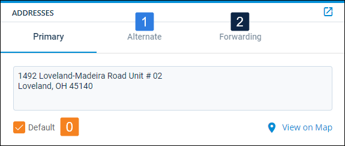
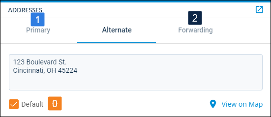
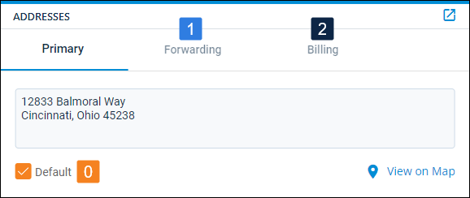
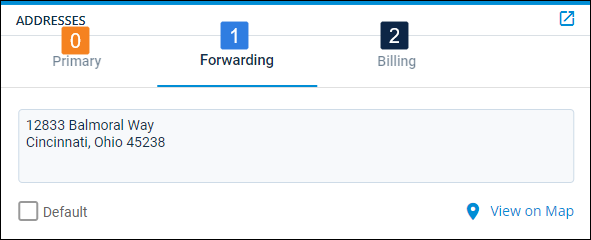
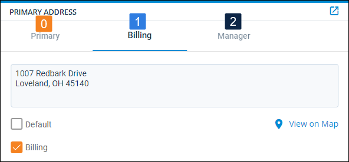
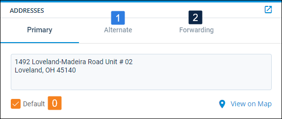
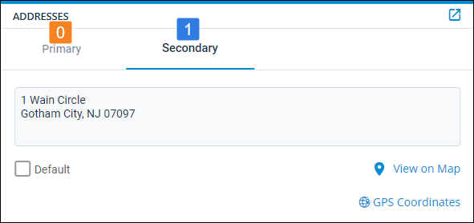
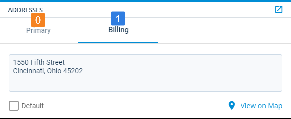

Source: https://rmxhelp.rentmanager.com/Topics/Express/KB/Script-Index-Address.htm
Address Indexing
In scripting, an index is how instances of an entity or other record are counted in a script. Indexing manages the one-to-many relationship that occurs between two classes.
When the Address class is used as a child class in a script (e.g., Tenant.Address.Function), an index can be specified to uniquely identify addresses that are associated with the preceding class. For example, tenants may have multiple addresses associated with their account, and indexing can be used to identify each of those addresses.
Addresses associated with the account are listed in the Addresses section. The address checked as Default has an index of 0. Following that default address, Rent Manager examines addresses with entries from left to right:

More Information
Marking a different address as Default reorders the index, which would alter the output of an existing script. New address types are added as the rightmost address in the section.
Address Index Relationships
The Address class may use an index parameter when it is preceded by certain classes. Each class is described below.
Contact.Address Indexing
Addresses are associated with each contact on an account. Tenant and prospect contacts have addresses listed on their details page in the Addresses tile.

[Tenant.Contact.Address(0).FullAddress]
Referencing the image above, this returns the full address of the Alternate address, the address with Default selected.
Owner.Address Indexing
Owner addresses are listed on their details page in the Addresses tile.

[Owner.Address(0).FullAddress]
Referencing the image above, this returns the full address of the Primary address, the address with Default selected.
PrimaryOwner.Address Indexing
A property's Primary Owner is specified on the Owners tab of the property, and owner addresses are listed on their details page in the Addresses tile.

[Property.PrimaryOwner.Address(1).FullAddress]
Referencing the image above, this returns the full address of the Forwarding address, the first non-default address from the left. This pulls from the owner designated as the property's Primary Owner.
Property.Address Indexing
Property addresses are listed on the details page in the Primary Address tile.

[Property.Address(1).FullAddress]
Referencing the image above, this returns the full address of the Billing address, the first non-default address from the left.
Prospect.Address Indexing
Prospect addresses are listed on their details page in the Addresses tile.
[Prospect.Address(1).FullAddress]
Referencing the image above, this returns the full address of the Secondary address, the first non-default address from the left.
Tenant.Address Indexing
Tenant addresses are listed on their details page in the Addresses tile.

[Tenant.Address(0).FullAddress]
Referencing the image above, this returns the full address of the Primary address, the address with Default selected.
Unit.Address Indexing
Unit addresses are listed on the details page in the Addresses tile.

[Unit.Address(1).FullAddress]
Referencing the image above, this returns the full address of the Secondary address, the first non-default address from the left.
Vendor.Address Indexing
Vendor addresses are listed on their details page in the Addresses tile.

[Vendor.Address(1).FullAddress]
Referencing the image above, this returns the full address of the Billing address, the first non-default address from the left.